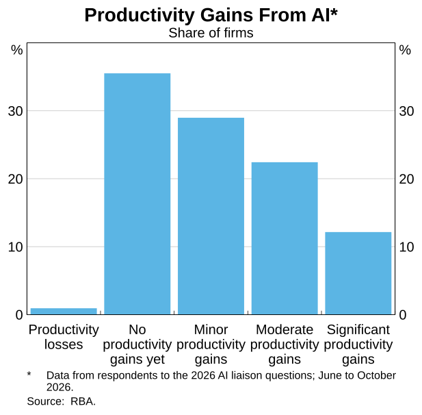
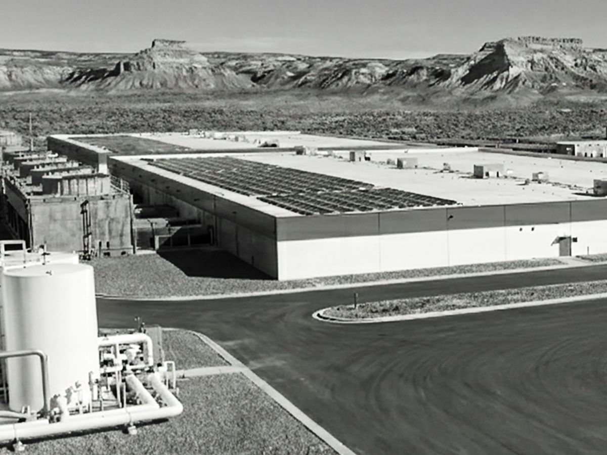

AI NEWS ISSUE 42
RBA, 빠른 AI 도입에도 생산성 효과는 아직 불확실
호주 중앙은행은 기업의 활용 증가와 경제 전체의 성과 사이에 간극이 있다고 봤습니다. llama.cpp의 도구 호출 오류 수정, Anthropic의 발전설비 확보 보도도 함께 살펴봅니다.
AT A GLANCE
30초 요약
- RBA AI가 경제 전체의 생산성을 크게 높였다는 증거는 아직 제한적이라고 설명했습니다. 기업 면담에서는 약 35%가 생산성 개선을 아직 경험하지 못했다고 답했습니다.
- llama.cpp b12199에서 잘못된 UTF-8 바이트가 도구 호출 처리 중 예외를 일으키는 경로를 수정했습니다. 문자 처리 뒤에도 인자의 업무상 유효성은 별도로 확인해야 합니다.
- Anthropic 34억 달러 규모의 가스 발전기 구매 약정을 확보했다는 FT 보도가 나왔습니다. 1.7GW는 보도된 설비 용량이며, 가동이 확인된 전력량은 아닙니다.
자료 확인 2026년 11월 9일 한국시간 기준으로 11월 8~9일 공개된 자료를 확인했습니다. RBA의 기업 면담은 6~10월 응답이며, Anthropic 계약 시점은 보도에 따르면 9월 말입니다.
01 / RESERVE BANK OF AUSTRALIA
사용하는 기업은 늘었지만,
큰 개선을 체감한 곳은 적었습니다
호주 중앙은행(RBA)의 Sarah Hunter 경제담당 부총재보가 11월 9일 시드니 UBS Australasia Conference에서 AI의 경제적 영향을 다뤘습니다. 특정 작업을 더 빨리 끝내는 사례는 많지만, 경제 전체의 생산성이 뚜렷하게 높아졌다는 증거는 아직 제한적이라는 설명입니다. RBA 연설 원문 ↗
기업 면담에서도 차이가 드러납니다. AI를 전혀 쓰지 않는 기업은 줄었지만, 업무를 깊이 바꾸는 수준의 활용은 여전히 적었습니다. 생산성에 대해서는 약 35%가 ‘아직 개선 없음’, 약 30%가 ‘작은 개선’이라고 답했습니다. ‘상당한 개선’이라는 응답은 10%대 초반입니다.

새 도구를 넣은 뒤 작업 방식도 바꿔야 합니다
RBA는 초기 학습·투자·조직 변경에 자원이 들어가면서 측정된 생산성이 한동안 정체하거나 떨어질 수 있는 생산성 J곡선을 설명했습니다. 전기도 증기기관을 모터로 바꾸는 데서 끝내지 않고 공장 배치와 생산 절차를 다시 짰을 때 큰 효과가 나타났다는 것입니다. AI의 미래 성과를 보장하는 예측보다는, 도입과 성과의 시차를 이해하는 관점입니다.
코드 초안을 빨리 만드는 것과 검토·통합·수정까지 마치는 것은 다릅니다. 우리 팀의 효과는 생성한 코드의 양보다, 검증을 마친 변경 한 건에 드는 전체 작업으로 확인해야 합니다.
02 / LLAMA.CPP b12199
도구 호출 인자의 잘못된 문자가
파서를 멈추던 경로를 고쳤습니다
llama.cpp가 11월 8일 공개한 b12199에는 도구 호출의 잘못된 UTF-8 처리를 보완한 PR #31861이 포함됐습니다. GitHub에서는 사전 릴리스로 표시된 빌드입니다. 빌드와 변경 사항 ↗
기존 PEG 채팅 파서는 일반 답변과 추론 내용에는 문자 정제 처리를 적용했지만, 도구 호출 ID와 인자 등을 읽는 네 경로에서는 원시 텍스트를 사용했습니다. 이곳에 잘못된 바이트가 들어가면 처리되지 않은 JSON 예외가 발생했습니다. 이번에는 네 경로도 sanitized_text()를 거치도록 바꿨습니다. 병합된 코드 ↗
수정 전
- 원시 텍스트 사용잘못된 바이트가 그대로 남음
- JSON 처리유효하지 않은 문자열을 만남
- 미처리 예외 발생해당 요청 처리 중단
b12199의 수정
- 문자 정제 추가
sanitized_text()적용 - 잘못된 바이트 대체유효한 UTF-8 문자열로 변환
- 해당 문자 오류 경로 보완인자의 의미 보존은 별도 확인
실행 전 남는 검사정제된 문서 ID가 허용된 값인지, 필수 인자와 접근 권한이 맞는지는 업무 서비스가 확인해야 합니다.
공식 문서에는 템플릿 분석부터 파서 생성까지의 전체 구조도 ↗도 있습니다. 위 그림은 그 전체 구조가 아니라 이번 패치의 문자 처리 경계만 설명합니다.
std::string value_content =
std::string(node.text);std::string value_content =
node.sanitized_text();PR 작성자는 잘못된 바이트를 파서에 직접 넣는 회귀 검사와 함께 44개 테스트, 225개 검증 항목에서 실패·예외 0건을 보고했습니다. 작성자의 파서 수준 검증 기록이며, 이 기사에서 모델을 실행해 재현한 결과는 아닙니다. PR의 검증 설명 ↗
문자열을 읽을 수 있어도 실행 가능한 요청인지는 따로 봅니다
잘못된 바이트를 대체 문자로 바꾸면 파서가 계속 처리할 수 있습니다. 그러나 문서 ID나 상품 코드가 바뀌었다면 그 값으로 도구를 실행해도 되는지는 다른 문제입니다. 인자의 형식, 필수값, 허용된 식별자, 접근 권한은 업무 서비스가 확인해야 합니다.
실패 뒤 재시도와 중복 실행도 이번 패치의 범위 밖에 있습니다. 특히 데이터를 변경하는 도구라면 앞선 요청의 완료 여부를 확인하는 장치가 별도로 필요합니다. 문자 처리 오류 하나를 고친 결과를 에이전트 전체의 안정성으로 확대하지 않는 편이 좋습니다.
03 / ANTHROPIC · 보도와 공개 거래 기록
연산 장비에 이어,
전력을 만들 설비도 확보합니다
11월 8일 Reuters가 전한 Financial Times 보도에 따르면 Anthropic은 9월 말, 텍사스의 장비 공급업체 OnePWR Solutions로부터 가스 발전기 구매 약정을 확보했습니다. 보도된 거래 규모는 약 34억 달러, 원화로 약 4조 6,400억 원이며, 발전기 용량은 총 1.7GW입니다. Reuters 배포 기사 ↗
원화는 규모를 이해하기 위한 환산입니다. 11월 6일 Exchange Rates UK 종가인 1달러당 1,363.6612원을 적용하면 약 4.636조 원입니다. 실제 원화 계약액은 아닙니다. 환율 기준 ↗

- 2026년 9월 말 · 보도상 계약1.7GW 규모 발전기의 구매 약정과 설치에 필요한 엔지니어링·건설 역량을 확보했습니다.
- 11월 8일 · 언론 보도FT가 전했고 Reuters가 인용했습니다. Reuters는 즉시 독립 검증하지 못했다고 밝혔습니다.
- 설비 설치·가동 · 확인되지 않음1.7GW를 이미 생산 중인 전력이나 데이터센터 가동 실적으로 계산하지 않습니다.
공식 기록도 일부 있습니다. 매각 자문사 Piper Sandler는 OnePWR의 발전 플랫폼을 ‘프런티어 AI 연구소’에 파는 34억 달러 거래를 자문했다고 공개했습니다. 다만 매수자를 Anthropic으로 명시하지는 않았습니다. 자문사의 거래 기록 ↗
Reuters 기사에는 Anthropic과 OnePWR가 논평 요청에 답하지 않았다고 적혀 있습니다. OnePWR 회사 자체를 인수한 거래도 아니라는 설명입니다. 따라서 공개된 매각 기록과, 매수자·설비 내역에 관한 언론 보도를 나눠 읽어야 합니다.
GPU를 확보해도 전력을 공급할 설비가 준비되지 않으면 서비스를 늘리기 어렵습니다. 다만 이 계약 보도만으로 API 가격 변화를 예상할 수는 없습니다. 우리가 조절할 수 있는 부분은 업무 한 건에 필요한 호출·재시도·검토의 양입니다.
OUR VIEW
도입한 다음에 남는 일을 봅니다
세 소식은 규모가 다릅니다. RBA는 경제 전체의 성과를, llama.cpp는 요청을 해석하는 코드를, Anthropic 보도는 물리적인 공급 능력을 다룹니다. 서로를 입증하는 자료는 아니지만, 업무를 설계할 때 놓치기 쉬운 지점을 각각 보여줍니다.
AI가 초안을 만드는 시간을 줄여도 검토와 오류 수정이 늘면 사람이 체감하는 효과는 작을 수 있습니다. 반대로 자동 검사를 추가해 실행 시간이 조금 길어져도 반복 확인이 줄었다면 업무는 나아질 수 있습니다. 응답 속도와 사람의 작업량을 따로 보고, 마지막 검증까지 포함해야 이 차이를 알 수 있습니다.
Workless Engineering의 성과도 여기에 있습니다. 모델은 해석과 제안을 맡고, 코드는 형식·권한·실행 상태를 확인하며, 사람이 필요한 예외를 판단하도록 만드는 것입니다. 이번에는 그중 가장 작은 경계인 ‘문자 처리 뒤의 도구 인자 검증’부터 시험해 보려 합니다.
OUR LAB · 아직 실행하지 않은 실험 제안
파서가 살아남은 요청을,
업무 도구가 받아도 될까요
가상의 운영 안내서 조회 도구 read_runbook을 만듭니다. 정상 요청은 문서 ID RB-017과 항목명 ‘재시작’을 보내고, 모의 저장소에서 해당 안내문만 돌려받습니다. 이번에 확인할 질문은 문자 처리로 복구한 인자가 원래 의도와 달라졌을 때, 잘못된 조회를 막을 수 있는가입니다.
- 01 · 입력 재생기정상·비정상 바이트를
파서에 직접 넣습니다. - 02 · 채팅 파서도구 이름과 인자를 추출하고
예외·문자 변경을 기록합니다. - 03 · 업무 검증기형식과 허용 ID가 맞는 요청만
모의 조회로 넘깁니다.
- 정상 ID · RB-017
- 예상 안내문 반환
조회 1회 - 바이트가 잘못된 ID
- 원본과 달라진 식별자는 보류
조회 0회 - 필수값 누락·잘못된 자료형
- 검증 오류를 반환하고 중단
조회 0회
파서 수정과 업무 검증의 효과를 따로 비교합니다
A는 수정 직전 코드, B는 b12199의 파서, C는 B에 업무 검증기를 붙인 구성으로 만듭니다. 검증기는 도구 이름 read_runbook과 미리 정한 문서 ID만 허용합니다. 같은 빌드 옵션과 입력을 사용하고, 자동 재시도는 꺼 둡니다. A와 B는 파서의 예외 차이를, B와 C는 잘못된 인자를 실행 전에 걸러내는 차이를 확인합니다. 격리한 테스트 실행기에서 비교하는 범위입니다.
네 수정 경로에 맞춰 정상 입력 네 개와 잘못된 UTF-8 입력 네 개를 만들고, 필수값·자료형 오류 네 개를 더해 최종 확인용 12개 입력을 고정합니다. 경로마다 출력 형식과 파서 설정을 기록하고, A·B·C에는 같은 조건을 적용합니다. 비정상 바이트는 도구 호출 ID나 문서 ID 인자에 넣습니다. 호출 ID가 원본과 달라진 경우도 검증기에서 보류합니다.
검증기 조정에는 별도 예시를 씁니다. 일반 JSON 클라이언트가 전송 전에 문자를 바꿔 버리지 않도록, 비정상 바이트는 파서 바로 앞에서 넣어야 합니다. 파서에서 예외가 발생한 입력은 실패로 기록하고 모의 조회로 넘기지 않습니다.
| 확인할 것 | 같이 기록할 내용 |
|---|---|
| 파서가 계속 동작하나 | 예외 발생 건수 / 전체 12건, 처리 후 문자열과 원본 바이트 |
| 요청의 의미가 유지됐나 | 기대 인자와 실제 인자의 일치 여부, 정제된 값의 차이 |
| 잘못된 조회를 막았나 | 거절해야 할 입력의 실제 조회 횟수, 정상 입력의 잘못된 거절 |
| 다음 변경에도 비교할 수 있나 | 코드 커밋, 입력 파일, 검증 규칙, 기대 결과와 실행 결과의 묶음 |
정상 네 건은 모두 기대한 안내문을 반환하고, 거절 대상으로 정한 여덟 건은 C에서 실제 조회가 0회여야 합니다. 작은 입력 세트가 통과하면 더 다양한 모델 출력과 스트리밍 경계로 검사를 넓힙니다. 이 단계의 통과만으로 운영 안정성이나 생산성 향상을 입증할 수는 없습니다.
업무 절감 효과는 후속 실험으로 분리합니다. 사람이 같은 오류를 조사하고 수정할 때 필요한 작업과 최종 완료까지의 시간을 비교하면 됩니다. 파서 예외를 없앤 효과와 사람의 반복 작업을 줄인 효과를 따로 확인해야, 무엇을 개선했는지 설명할 수 있습니다.
읽은 자료
- RBA · What Happens to the Economy as ‘Intelligence’ Gets Cheaper? 11월 9일 · Sarah Hunter 연설, 기업 면담과 생산성 J곡선
- RBA · 생산성 응답 분포 원본 그래프 6~10월 면담 응답 · 이용 조건
- llama.cpp · b12199 릴리스 11월 8일 · 사전 릴리스 표시와 포함된 패치
- llama.cpp · PR #31861 네 처리 경로와 작성자의 파서 테스트 보고
- llama.cpp · 병합된 변경 코드 원시 텍스트를 sanitized_text()로 바꾼 부분
- llama.cpp · Auto-Parser Architecture b12199 기준 공식 구조도 · 템플릿 분석과 파서 생성, 호출 ID와 함수 이름의 구분
- Reuters · Anthropic 발전설비 계약 보도 배포본 11월 8일 · FT 인용, 독립 검증 여부와 양사 응답 상태
- Piper Sandler · OnePWR 거래 자문 기록 2026년 9월 거래 · 34억 달러, 매수자 이름은 비공개
- Caterpillar · OnePWR·Vero3 협력 발표 2026년 3월 · 사업 배경을 보여주는 공식 참고 이미지, 이번 Anthropic 거래의 증거는 아님
- Exchange Rates UK · USD/KRW 이력 11월 6일 종가를 계약 보도 금액의 참고 환산에 사용
FT 원문은 접근하지 못해 Reuters 배포본으로 보도 내용을 확인했습니다. RBA 그래프와 Caterpillar 참고 이미지는 공식 원본이며, 코드 비교는 공식 변경 내역의 발췌입니다. 문자 처리 도식, 타임라인과 실험 흐름은 이 기사에서 구성한 설명 자료입니다.